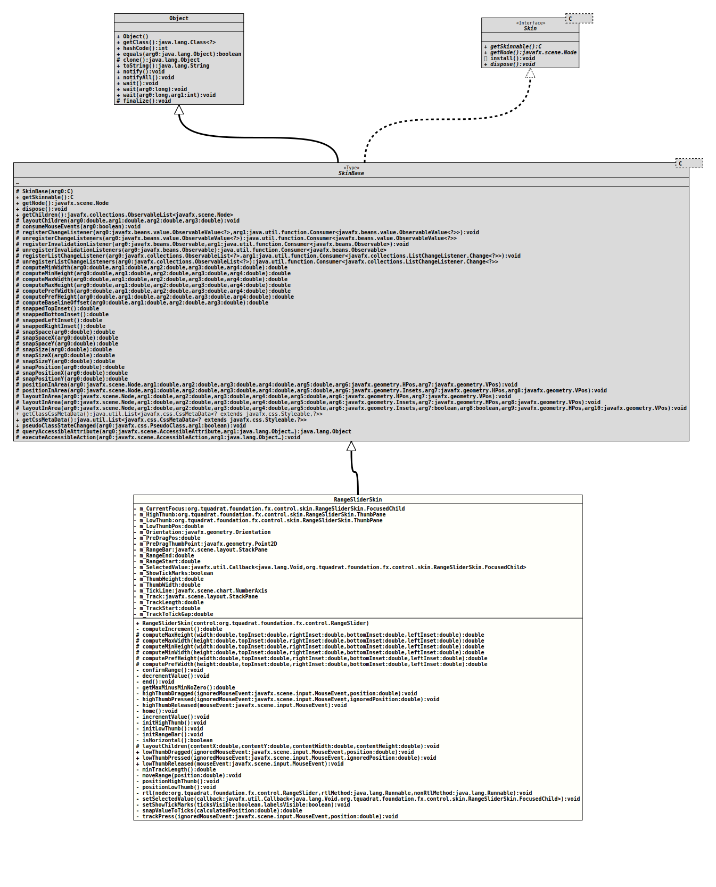

Module org.tquadrat.foundation.fx
Class RangeSliderSkin
- All Implemented Interfaces:
Skin<RangeSlider>
@ClassVersion(sourceVersion="$Id: RangeSliderSkin.java 1114 2024-03-12 23:07:59Z tquadrat $")
@API(status=STABLE,
since="0.4.6")
public class RangeSliderSkin
extends SkinBase<RangeSlider>
The skin for instances of
RangeSlider.- Author:
- Thomas Thrien (thomas.thrien@tquadrat.org)
- Version:
- $Id: RangeSliderSkin.java 1114 2024-03-12 23:07:59Z tquadrat $
- Since:
- 0.4.6
- Inspired through:
- ControlsFX Project
- UML Diagram
-

UML Diagram for "org.tquadrat.foundation.fx.control.skin.RangeSliderSkin"
{kind=link}
-
Nested Class Summary
Nested ClassesModifier and TypeClassDescriptionprotected static enumThe indicators for the focus owners.private static final classThe implementation ofStackPanethat is used for the thumbs of aRangeSliderinstance. -
Field Summary
FieldsModifier and TypeFieldDescriptionprivate RangeSliderSkin.FocusedChildThe current focus owner.private RangeSliderSkin.ThumbPaneThe high thumb itself.private RangeSliderSkin.ThumbPaneThe low thumb itself.private doubleThe position for the low thumb.private OrientationThe orientation for theRangeSlider.private doubleUsed as a temp value for low and high thumbs.private Point2DThem_PreDragPosin skin coordinates.private StackPaneThe bar between the two thumbs, can be dragged.private doubleThe end of the range.private doubleThe start of the range.private Callback<Void, RangeSliderSkin.FocusedChild> The callback for the value selection.private booleanThe flag that indicates whether the tick marks are shown or not.private doubleThe height of the thumbs.private doubleThe width of the thumbs.private NumberAxisThe tick line.private StackPaneThe container that represents the slider track.private doubleThe length of the track.private doubleThe start of the track.private doubleThe width of the gap between the slider track and the tick line. -
Constructor Summary
ConstructorsConstructorDescriptionRangeSliderSkin(RangeSlider control) Creates a new instance ofRangeSliderSkin. -
Method Summary
Modifier and TypeMethodDescriptionprivate final doubleCalculates the increment/decrement value that is used byincrementValue()anddecrementValue()to move the thumps.protected final doublecomputeMaxHeight(double width, double topInset, double rightInset, double bottomInset, double leftInset) protected final doublecomputeMaxWidth(double height, double topInset, double rightInset, double bottomInset, double leftInset) protected final doublecomputeMinHeight(double width, double topInset, double rightInset, double bottomInset, double leftInset) protected final doublecomputeMinWidth(double height, double topInset, double rightInset, double bottomInset, double leftInset) protected final doublecomputePrefHeight(double width, double topInset, double rightInset, double bottomInset, double leftInset) protected final doublecomputePrefWidth(double height, double topInset, double rightInset, double bottomInset, double leftInset) private voidAdjusts the range bar's position after it was released.private final voidMoves the selected thumb in the direction to theminvalue.private final voidend()Responds to the END key.private final doubleReturns the difference betweenRangeSlider.getMax()andRangeSlider.getMin(), but if they have the same value, 1.0 is returned instead of 0.0 because otherwise the division where the result value can be used will returnDouble.NaN.private final voidhighThumbDragged(MouseEvent ignoredMouseEvent, double position) Updates the high value based on the new position of the high thumb after it was dragged with the mouse.private final voidhighThumbPressed(MouseEvent ignoredMouseEvent, double ignoredPosition) Prepares the dragging of the high thumb.private final voidhighThumbReleased(MouseEvent mouseEvent) Adjusts the high value when the high thumb is released.private final voidhome()Responds to the HOME key.private final voidMoves the selected thumb in the direction to themaxvalue.private final voidInitialises the high thumb.private final voidInitialises the low thumb.private final voidInitialises the range bar.private final booleanChecks whether the orientation of theRangeSlideris horizontal.protected final voidlayoutChildren(double contentX, double contentY, double contentWidth, double contentHeight) final voidlowThumbDragged(MouseEvent ignoredMouseEvent, double position) Updates the low value based on the new position of the low thumb after it was dragged with the mouse.voidlowThumbPressed(MouseEvent ignoredMouseEvent, double ignoredPosition) Prepares the dragging of the low thumb.final voidlowThumbReleased(MouseEvent mouseEvent) Adjusts the low value when the low thumb is released.private final doubleCalculates the minimum length for the track.private final voidmoveRange(double position) Sets the new positions after a move of the range bar.private final voidCalled whenever eithermin,maxorhighValuehas changed, so that high thumb'sNode.setLayoutX(double)andNode.setLayoutY(double)is recomputed.private final voidCalled whenever eithermin,maxorlowValuehas changed, so that low thumb'sNode.setLayoutX(double)andNode.setLayoutY(double)is recomputed.private final voidrtl(RangeSlider node, Runnable rtlMethod, Runnable nonRtlMethod) Implements the inverted orientation.private voidsetSelectedValue(Callback<Void, RangeSliderSkin.FocusedChild> callback) Set up a callback to indicate which thumb is currently selected (via enum).private voidsetShowTickMarks(boolean ticksVisible, boolean labelsVisible) Shows tick marks and their labels.private final doublesnapValueToTicks(double calculatedPosition) Adjusts the position of a thumb to the nearest tick mark.private final voidtrackPress(MouseEvent ignoredMouseEvent, double position) Invoked by theRangeSlider'sSkinimplementation whenever a mouse press occurs on the "track" of the slider.Methods inherited from class javafx.scene.control.SkinBase
computeBaselineOffset, consumeMouseEvents, dispose, executeAccessibleAction, getChildren, getClassCssMetaData, getCssMetaData, getNode, getSkinnable, layoutInArea, layoutInArea, layoutInArea, positionInArea, positionInArea, pseudoClassStateChanged, queryAccessibleAttribute, registerChangeListener, registerInvalidationListener, registerListChangeListener, snappedBottomInset, snappedLeftInset, snappedRightInset, snappedTopInset, snapPosition, snapPositionX, snapPositionY, snapSize, snapSizeX, snapSizeY, snapSpace, snapSpaceX, snapSpaceY, unregisterChangeListeners, unregisterInvalidationListeners, unregisterListChangeListeners
-
Field Details
-
m_CurrentFocus
The current focus owner. -
m_HighThumb
The high thumb itself. -
m_LowThumb
The low thumb itself. -
m_LowThumbPos
The position for the low thumb. -
m_Orientation
The orientation for theRangeSlider. -
m_PreDragPos
Used as a temp value for low and high thumbs. -
m_PreDragThumbPoint
Them_PreDragPosin skin coordinates. -
m_RangeBar
The bar between the two thumbs, can be dragged. -
m_RangeEnd
The end of the range. -
m_RangeStart
The start of the range. -
m_SelectedValue
The callback for the value selection. -
m_ShowTickMarks
The flag that indicates whether the tick marks are shown or not. -
m_ThumbHeight
The height of the thumbs. -
m_ThumbWidth
The width of the thumbs. -
m_TickLine
The tick line. -
m_Track
The container that represents the slider track. -
m_TrackLength
The length of the track. -
m_TrackStart
The start of the track. -
m_TrackToTickGap
The width of the gap between the slider track and the tick line.
-
-
Constructor Details
-
RangeSliderSkin
Creates a new instance ofRangeSliderSkin.- Parameters:
control- The control for which this Skin should attach to.
-
-
Method Details
-
computeIncrement
Calculates the increment/decrement value that is used byincrementValue()anddecrementValue()to move the thumps.- Returns:
- The increment value (that is also used decrement the position values for the thumbs).
-
computeMaxHeight
protected final double computeMaxHeight(double width, double topInset, double rightInset, double bottomInset, double leftInset) - Overrides:
computeMaxHeightin classSkinBase<RangeSlider>
-
computeMaxWidth
protected final double computeMaxWidth(double height, double topInset, double rightInset, double bottomInset, double leftInset) - Overrides:
computeMaxWidthin classSkinBase<RangeSlider>
-
computeMinHeight
protected final double computeMinHeight(double width, double topInset, double rightInset, double bottomInset, double leftInset) - Overrides:
computeMinHeightin classSkinBase<RangeSlider>
-
computeMinWidth
protected final double computeMinWidth(double height, double topInset, double rightInset, double bottomInset, double leftInset) - Overrides:
computeMinWidthin classSkinBase<RangeSlider>
-
computePrefHeight
protected final double computePrefHeight(double width, double topInset, double rightInset, double bottomInset, double leftInset) - Overrides:
computePrefHeightin classSkinBase<RangeSlider>
-
computePrefWidth
protected final double computePrefWidth(double height, double topInset, double rightInset, double bottomInset, double leftInset) - Overrides:
computePrefWidthin classSkinBase<RangeSlider>
-
confirmRange
Adjusts the range bar's position after it was released. -
decrementValue
Moves the selected thumb in the direction to theminvalue. -
end
Responds to the END key. -
getMaxMinusMinNoZero
Returns the difference betweenRangeSlider.getMax()andRangeSlider.getMin(), but if they have the same value, 1.0 is returned instead of 0.0 because otherwise the division where the result value can be used will returnDouble.NaN.- Returns:
- The difference.
-
highThumbDragged
Updates the high value based on the new position of the high thumb after it was dragged with the mouse.- Parameters:
ignoredMouseEvent- The mouse event.position- The mouse position on the track with 0.0 being the start of the track and 1.0 being the end.
-
highThumbPressed
Prepares the dragging of the high thumb.
When the high thumb is released,
RangeSlider.highValueChangingProperty()is set tofalse.- Parameters:
ignoredMouseEvent- The mouse event.ignoredPosition- The new position.
-
highThumbReleased
Adjusts the high value when the high thumb is released.- Parameters:
mouseEvent- The mouse event.
-
home
Responds to the HOME key. -
incrementValue
Moves the selected thumb in the direction to themaxvalue. -
initHighThumb
Initialises the high thumb.
Needs to be called after
initLowThumb()and beforeinitRangeBar(). -
initLowThumb
Initialises the low thumb.
Needs to be called before
initHighThumb(). -
initRangeBar
Initialises the range bar.
Needs to be called after
initHighThumb(). -
isHorizontal
Checks whether the orientation of theRangeSlideris horizontal.- Returns:
trueif the orientation isOrientation.HORIZONTAL,falsewhen it isOrientation.VERTICAL.
-
layoutChildren
protected final void layoutChildren(double contentX, double contentY, double contentWidth, double contentHeight) - Overrides:
layoutChildrenin classSkinBase<RangeSlider>
-
lowThumbDragged
Updates the low value based on the new position of the low thumb after it was dragged with the mouse.- Parameters:
ignoredMouseEvent- The mouse event.position- The mouse position on the track with 0.0 being the start of the track and 1.0 being the end.
-
lowThumbPressed
Prepares the dragging of the low thumb.
When the low thumb is released,
RangeSlider.lowValueChangingProperty()is set tofalse.- Parameters:
ignoredMouseEvent- The mouse event.ignoredPosition- The new position.
-
lowThumbReleased
Adjusts the low value when the low thumb is released.- Parameters:
mouseEvent- The mouse event.
-
minTrackLength
Calculates the minimum length for the track.- Returns:
- The minimum track length.
-
moveRange
Sets the new positions after a move of the range bar.- Parameters:
position- The new position.
-
positionHighThumb
Called whenever eithermin,maxorhighValuehas changed, so that high thumb'sNode.setLayoutX(double)andNode.setLayoutY(double)is recomputed. -
positionLowThumb
Called whenever eithermin,maxorlowValuehas changed, so that low thumb'sNode.setLayoutX(double)andNode.setLayoutY(double)is recomputed. -
rtl
Implements the inverted orientation.- Parameters:
node- A reference to the node.rtlMethod- The function that has to be used for an orientation from right to left.nonRtlMethod- The function that has to be used for an orientation from left to right.
-
setSelectedValue
Set up a callback to indicate which thumb is currently selected (via enum).- Parameters:
callback- The callback.
-
setShowTickMarks
Shows tick marks and their labels.
When ticks or labels change their visibility, we have to compute the new visibility and to add the necessary objects. After this method returns, we must be sure to add the high thumb and the range bar.
- Parameters:
ticksVisible-trueif the tick marks are visible,falseif not.labelsVisible-trueif the tick labels are visible,falseif not.
-
snapValueToTicks
Adjusts the position of a thumb to the nearest tick mark.- Parameters:
calculatedPosition- The calculated raw position.- Returns:
- The adjusted position.
-
trackPress
Invoked by theRangeSlider'sSkinimplementation whenever a mouse press occurs on the "track" of the slider. This will cause the thumb to be moved by some amount.- Parameters:
ignoredMouseEvent- The mouse event.position- The relative mouse position on the track, with 0.0 being the start of the track and 1.0 being the end.
-